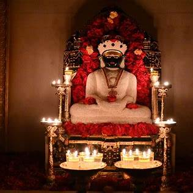
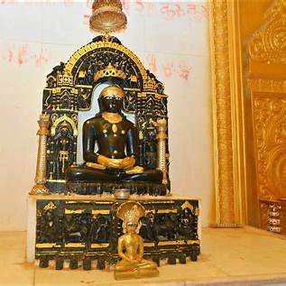

• The Divine Figure

Shri Vimalnath Bhagwan
13th Tirthankara
Carved with absolute precision from sacred stone, the deep black posture of Vimalnath Bhagwan radiates a deep meditative stillness. Adorned with a magnificent golden crown and frame (Prabhavali), the Murti stands as a physical conduit of ancient spiritual liberation.

The Golden Prabhavali
Intricate celestial carvings framing the Lord in infinite grace and light.